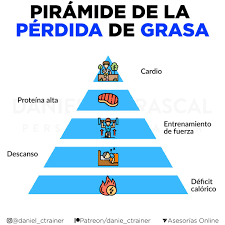
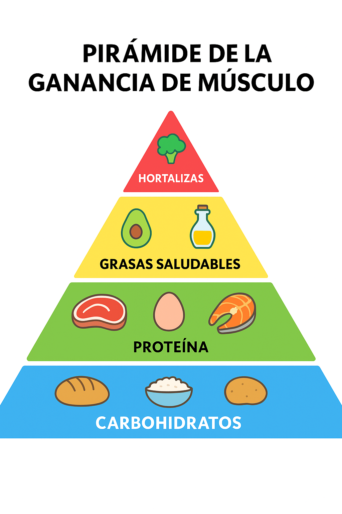

Deficit Cálorico
El déficit calórico es un concepto fundamental dentro de la nutrición y la pérdida de peso, y se refiere a la situación en la que una persona consume menos calorías de las que su cuerpo necesita para mantener su peso actual. En otras palabras, cuando el organismo recibe menos energía de la que gasta, se ve obligado a utilizar sus reservas, principalmente la grasa corporal, para cubrir esa necesidad energética. Este proceso es la base científica detrás de la pérdida de grasa y es la razón por la cual el déficit calórico es considerado la estrategia más efectiva y universal para adelgazar.
Una de las principales ventajas del déficit calórico es que permite reducir la grasa corporal de manera progresiva y controlada. Al obligar al cuerpo a utilizar sus propios depósitos energéticos, se favorece la pérdida de grasa sin necesidad de recurrir a dietas extremas o métodos poco saludables. El déficit calórico también ayuda a mejorar la composición corporal: si se combina con actividad física regular, especialmente con entrenamiento de fuerza, permite conservar la masa muscular mientras la grasa se reduce, lo que contribuye a un cuerpo más tonificado y saludable.
Otra ventaja importante es que el déficit calórico mejora la salud metabólica. Al perder grasa, disminuye el riesgo de enfermedades como la diabetes tipo 2, la hipertensión, el colesterol alto y otros trastornos relacionados con el sobrepeso. Además, mantener un déficit calórico moderado puede mejorar la sensibilidad a la insulina, facilitar la regulación del azúcar en sangre y reducir la inflamación crónica, un factor que suele estar presente en muchos problemas de salud.
El déficit calórico también tiene beneficios psicológicos y emocionales. Muchas personas experimentan una mayor sensación de bienestar, mejora del estado de ánimo y aumento de la motivación al ver resultados progresivos en su cuerpo. Alcanzar objetivos relacionados con el peso y la salud aporta confianza y refuerza la disciplina personal. Asimismo, cuando el déficit se aplica mediante hábitos sostenibles —como una alimentación equilibrada, mayor consumo de verduras, proteínas de calidad y ejercicio regular— se favorece un estilo de vida más saludable que puede mantenerse a largo plazo.
Es importante destacar que el déficit calórico no se trata de comer lo menos posible, sino de encontrar un equilibrio en el que el cuerpo reciba los nutrientes necesarios mientras se reduce ligeramente la ingesta calórica. Un déficit moderado, acompañado de una buena planificación alimentaria y ejercicio, es suficiente para obtener resultados sin afectar negativamente la salud. Cuando se aplica correctamente, se convierte en una herramienta poderosa para transformar el cuerpo, mejorar la salud y adquirir hábitos que contribuyan al bienestar general.
Aumento de masa

La alimentación enfocada en el aumento de masa muscular requiere constancia, organización y una comprensión adecuada de lo que el cuerpo necesita para crecer. Para ganar músculo, lo primero es asegurar un ligero superávit calórico que permita generar nuevo tejido. No se trata de comer en exceso, sino de añadir unas cuantas calorías por encima del gasto diario para favorecer el crecimiento sin acumular demasiada grasa. Dentro de esas calorías adicionales, las proteínas juegan un papel esencial, ya que son el material principal que el cuerpo utiliza para reparar y aumentar las fibras musculares después del entrenamiento. Consumir una cantidad suficiente de proteína a lo largo del día, repartida en varias comidas, ayuda a mantener un flujo constante de aminoácidos que favorece la construcción muscular.
Los carbohidratos también son fundamentales, porque son el combustible que permite entrenar con fuerza. Un cuerpo que dispone de suficiente glucógeno puede rendir más en el gimnasio, levantar más peso y recuperarse más rápido. Elegir carbohidratos de calidad, como avena, arroz, pasta integral, frutas o patata, garantiza energía sostenida y una buena recuperación, especialmente si se consumen antes y después de entrenar. Las grasas saludables, aunque a veces se subestiman, son determinantes para mantener un sistema hormonal fuerte y equilibrado, algo especialmente importante cuando el objetivo es ganar masa muscular. Incluir aguacates, frutos secos, semillas, aceites de buena calidad y pescados grasos asegurará este soporte hormonal.
Es conveniente mantener una frecuencia de comidas adecuada, no porque sea obligatorio comer muchas veces al día, sino porque así resulta más fácil cubrir todas las calorías y proteínas necesarias sin sentirse demasiado lleno. La hidratación también es crucial: un cuerpo deshidratado rinde menos, se cansa más rápido y no se recupera igual, por lo que beber suficiente agua a lo largo del día es una parte indispensable del proceso. Aunque no son imprescindibles, algunos suplementos pueden facilitar el camino. La proteína en polvo puede ayudar cuando cuesta llegar a los gramos diarios requeridos, la creatina mejora el rendimiento y la fuerza, los omega-3 contribuyen a reducir la inflamación y favorecer la salud muscular, y un multivitamínico puede ser útil en dietas con carencias.
Finalmente, es importante recordar que el progreso se mide con paciencia. Aumentar masa muscular es un proceso lento, que requiere constancia y ajustes periódicos en la alimentación según cómo responda el cuerpo. Registrar cambios, prestar atención a la energía durante los entrenamientos y ajustar las calorías cuando sea necesario ayudará a avanzar sin estancarse. Con una alimentación equilibrada, una rutina bien estructurada y descanso suficiente, el desarrollo muscular llegará de manera sólida y sostenida.